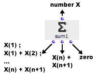
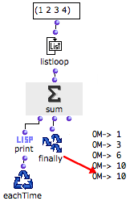
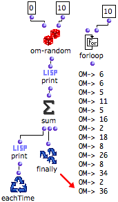

OpenMusic DocumentationHiérarchie de section : OM 6.6 User Manual > Visual Programming II > Iterations: OMLoop > Accumulators > Sum
OpenMusic DocumentationHiérarchie de section : OM 6.6 User Manual > Visual Programming II > Iterations: OMLoop > Accumulators > Sum
Navigation : page précédente | page suivante
Attention, votre navigateur ne supporte pas le javascript ou celui-ci à été désactivé. Certaines fonctionnalités de ce guide sont restreintes.
Sum : Calculating Sums
 Sum adds the successive input values.
Sum adds the successive input values.
Inputs, Outputs

|
Sum has one input and three outputs :
|
Examples
Calculating a Sum from a List
The components of a list are returned successively by listloop to sum.
|

|
Calculating the Sum of N Random Numbers

|
We now want to calculate the sum of 10 random numbers between 1 and 10.
|
Références :
Plan :
Navigation : page précédente | page suivante
A propos...(c) Ircam - Centre Pompidou